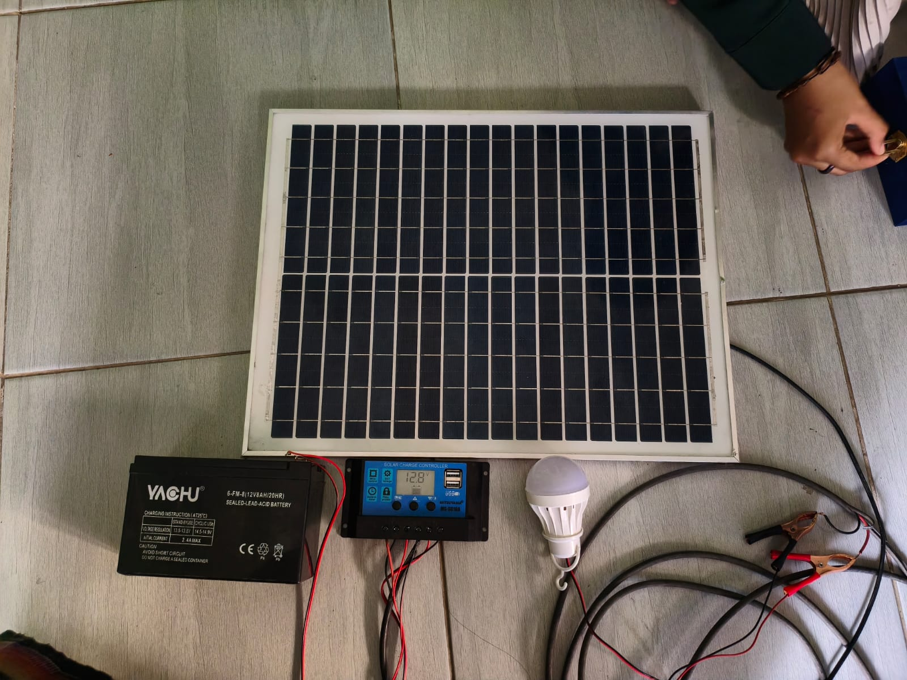
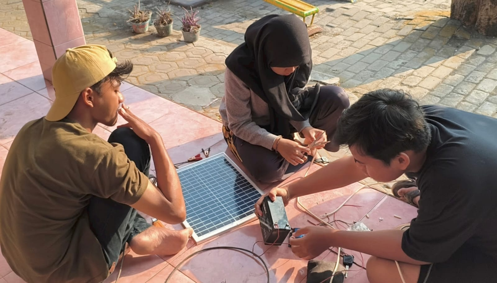
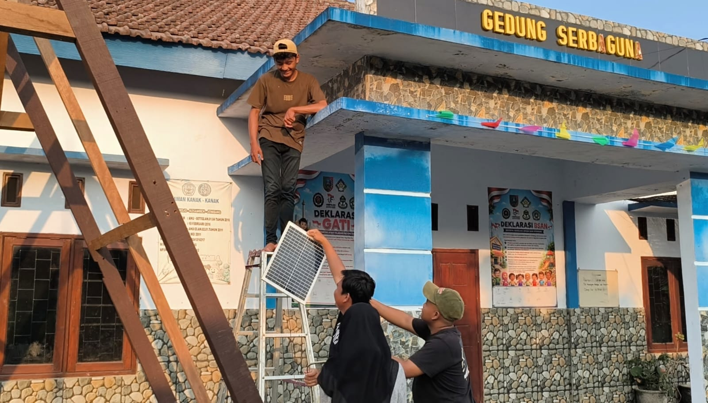
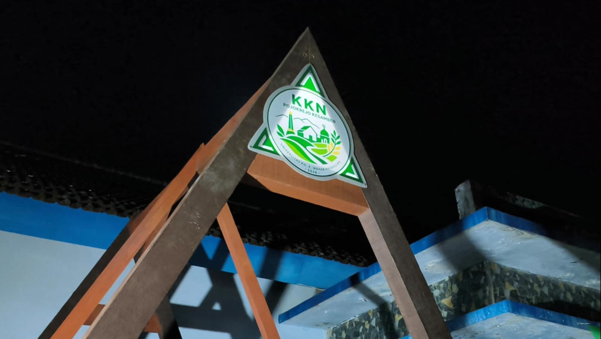

Latar Belakang Program
Mengapa perangkat ini dibuat dan diimplementasikan di Desa Pojokrejo.
⚠️ Permasalahan
Fasilitas desa membutuhkan penerangan ketika kondisi mulai gelap, sementara penggunaan listrik PLN secara terus-menerus membebani biaya bulanan desa dan kurang praktis dalam pengoperasian manual setiap hari.
💡 Solusi yang Diterapkan
Penerangan mandiri menggunakan energi matahari yang tersimpan dalam baterai (Off-grid). Lampu beroperasi secara otomatis mengikuti cahaya matahari tanpa perlu saklar manual, memberikan efisiensi energi yang maksimal.
Simulasi Sistem
Alat fisik tidak tersedia di lokasi? Coba simulasi interaktif aliran energi dari perangkat secara langsung di bawah ini.
Monitoring Digital
Status: Mengisi Daya (Charging)
Komponen & Cara Kerja
Menyerap
Panel surya menangkap cahaya (DC).
Mengontrol
SCC mengatur arus agar aki aman.
Mendeteksi
Panel berhenti = Tanda malam tiba.
Menyala
Daya baterai dialirkan ke lampu.
Panel Surya
Menangkap cahaya matahari dan mengubahnya jadi listrik.
Controller (SCC)
Mendeteksi siang/malam dan mencegah overcharge baterai.
Baterai Aki
Menyimpan energi di siang hari untuk dipakai malam hari.
Lampu LED
Pencahayaan hemat daya yang menyala otomatis.
Spesifikasi Teknis
Data spesifikasi perangkat keras yang dirakit untuk proyek ini.
| Komponen / Parameter | Spesifikasi |
|---|---|
| Panel Surya | Polycrystalline (20 Wp) |
| Kapasitas Baterai | 12 V / 8 Ah (VRLA / Aki Kering) |
| Controller (SCC) | PWM Solar Charge Controller (10A) |
| Jenis Lampu | LED DC 12V Hemat Energi |
| Sistem Operasi | Off-Grid (Berdiri Sendiri) |
| Mode Aktivasi | Otomatis (Sensor Tegangan Panel) |
Dokumentasi Implementasi
Bukti instalasi fisik perangkat yang telah diimplementasikan di lokasi.



